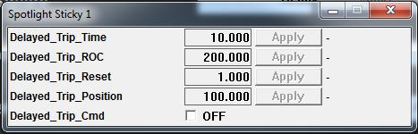

This How To provides the steps required to run an engine in Run Mode (Manual).
Run Mode is used for running the engine. In Run Mode, the operator has full control of the engine using the throttle levers.
When the system is in Run Mode (or Auto Mode), any remote engine selection is delayed until the operator exits Run Mode. This prevents an accidental change of engine type during an engine test.
In Run Mode, the following data is displayed on the Run Mode Screen in real time:
An operator can only enter Run Mode after an engine is selected and (if applicable) all Actuators have been rigged.
The following procedures can be performed in Run Mode:
The fuel supply can be turned on and off from the throttle quadrant when the system is in Run Mode.
An operator can only exit Run Mode when the fuel to the engine is turned off.
Return to Run Mode Procedures.
Flight Idle is an engine state. The engine schedules fuel differently depending on whether the engine is in a Ground Idle or Flight Idle state. When in Flight Idle the engine speed is higher than when in Ground Idle.
On many modern turbofan engines, the terms "Flight Idle" and "Ground Idle" are misleading. The terminology should be Low Idle and High Idle as most engines are set up to use Low Idle on the ground and in normal flight. This is termed "Ground Idle". The High Idle state is set in flight (Flight Idle) so that the engine is spooled up in the event of a missed approach and for a short duration just after touchdown to facilitate rapid reverse thrust. Logic circuits determine that the aircraft is in the air and in the approach and landing configuration to command the increase to "Flight Idle". The idle setting is returned to the low, or "Ground Idle" state after a predetermined time interval after the landing gear touches down. The terminology is likely a carryover from the earlier turboprop days that strictly used Flight Idle and Ground Idle.
The flight idle state can be set in three different ways:
When Flight Idle is initiated, the output command to the engine (via hardwired discrete output or through proDAS via ARINC subsystem) depending on the engine type is turned on.
The Flight Idle state can not be selected unless the fuel status is on.
Return to Run Mode Procedures.
A trip is a predefined position (set-point) for the Throttle System. The Throttle System moves (increasing/decreasing the fuel supply to the engine) to the predefined position if:
The trip set point can be set to any value between the minimum and maximum positions of the engine.
When a trip is initiated, the output command to the engine (either via actuator, resolver/RVDT or both) moves to the predefined value at the defined trip rate.
The rate at which the output moves to the tripped position is configurable. It can be configured using the <tripIdleRampRate> and the <tripCutOffRampRate> elements in the master configuration file. For details, see Configuration. The units of these parameters are in degrees per second. A higher number results in a faster response. The maximum value (default) that can be entered is 400 deg/sec.
In a dual lever system, the trips can be configured so that they trip either lever or both levers and the positions that the levers trip to can be different. The dead bands and trip rates can be different as well.
There are two trip Positions, Idle and Cutoff. Both positions work the same way. The trip positions can be the same but Cutoff is usually lower than Idle. Trip to Cutoff has a higher priority than Trip to Idle.
If an idle trip is commanded and a Trip to Cutoff command is received, the Idle trip is cleared and the system initiates the Trip to Cutoff.
On the throttle quadrant a trip can be initiated from the Run Mode screen.
To move to a trip position:
To clear a trip position and resume manual control:
The trip reset band is the area around the trip position. The size of the trip reset band is configurable. It can be configured using the <tripIdleResetBand> or <tripCutOffResetBand> elements in the master configuration file. For details, see Configuration.
The trip position can be configured using the <tripIdlePosition> and <tripCutOffPosition> elements in the master configuration file. For details, see Reference - Configuration.
A trip can be initiated from proDAS using the following:
The trigger for the trip is created using a proDAS OPC Channel. The trigger channel is configured in proDAS using the Channel Editor. For details, see the Channel Editor in proDAS Integrated Help accessed from the MDS Product Support Manual (PSM) or from the Management GUI Computer.
The proDAS documentation referenced above is only available for facilities with a proDAS installation.
The variables for the trip are contained in the Throttle System master file. For details, see Configuring a Trip Position Initiated by the Throttle Quadrant.
A delayed trip can also be initiated from proDAS. A delayed trip is a trip request that is not performed until after a specified delay period. For example, a delay could be set based on an action such as engine acceleration. In this scenario, the engine continues to accelerate for the length of the delay and then the trip starts and the engine moves towards the trip position.
A delayed trip is initiated from proDAS in the same manner as a regular trip except:
Zero (0) seconds can be used for a trip without a delay.
The image below is an example of a delayed trip configured using a spotlight sticky.

When the delayed trip is commanded using the Delayed Trip Command channel, the command must remain ON for the duration of the delay time for the trip to be activated.
If the command is turned off before the delay time is over, the delay time is reset and the trip does not occur.
When the delayed trip is activated, the throttle command signal automatically moves to the delayed trip position at the rate specified by the proDAS rate of change parameter.
After the command signal has moved to the trip position, it remains at this position until the throttle lever is moved within the reset band of the trip position. This resets the trip and the throttle lever resumes control of the engine's fuel valve.
The delayed trip is automatically reset if:
The delayed trip is configured in proDAS using the Channel Editor. For details, see the Channel Editor in proDAS Integrated Help accessed from the MDS Product Support Manual (PSM) or from the Management GUI Computer.
The proDAS documentation referenced above is only available for facilities with a proDAS installation.
Return to Run Mode Procedures.
A stop is a point that can be set beyond which the throttle quadrant does not increase or decrease the fuel supply to the engine. Up to four (4) stops can be added per lever for a total of four (4) stops in a single lever system and eight (8) stops in a dual lever system.
If the maximum number of stops have already been added, the Add bottom on the Run Mode screen is disabled.
The stops have three different options:
The throttle quadrant's lever movement is not mechanically restricted so it can always move past a stop but the throttle quadrant does not send any signals to the throttle controller. If the operator passes by a stop without pushing the release button, the command bar graph showing the command to the engine is limited at the stop setting.
From the display computer the operator can:
The Throttle System can be configured so that stops can be added at just the current lever position or at either the current lever position or a new potion.
Once a stop is added, it is saved to the loaded engine configuration in the master configuration file. When the engine is loaded for a future engine test, the stops do not have to be added again.
To enter a negative number, press in Inv button.
Once a stop is added, it is saved to the loaded engine configuration in the master configuration file. When the engine is loaded for a future engine test, the stops do not have to be added again.
Return to Run Mode Procedures.
It is not possible to exit Run Mode while fuel to the engine is on.
Return to Run Mode Procedures.